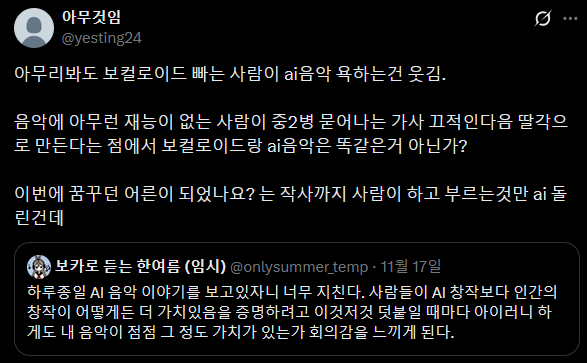
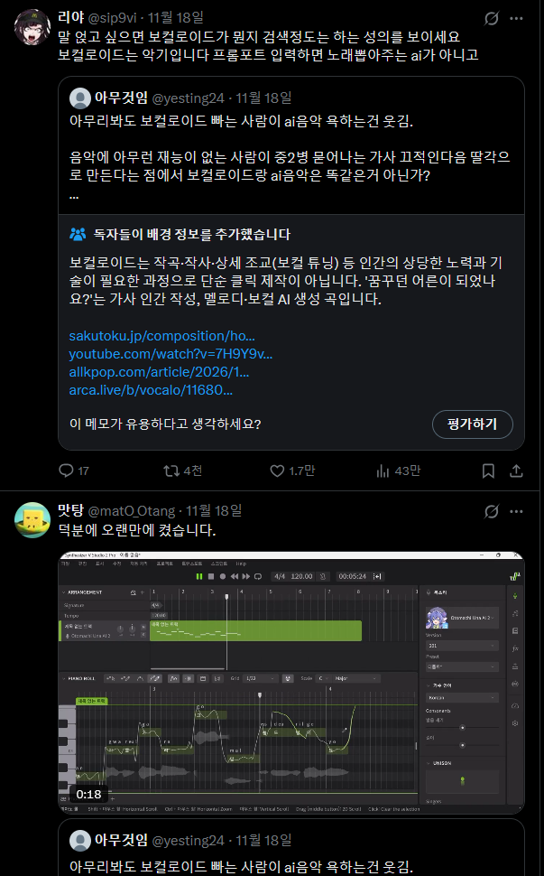
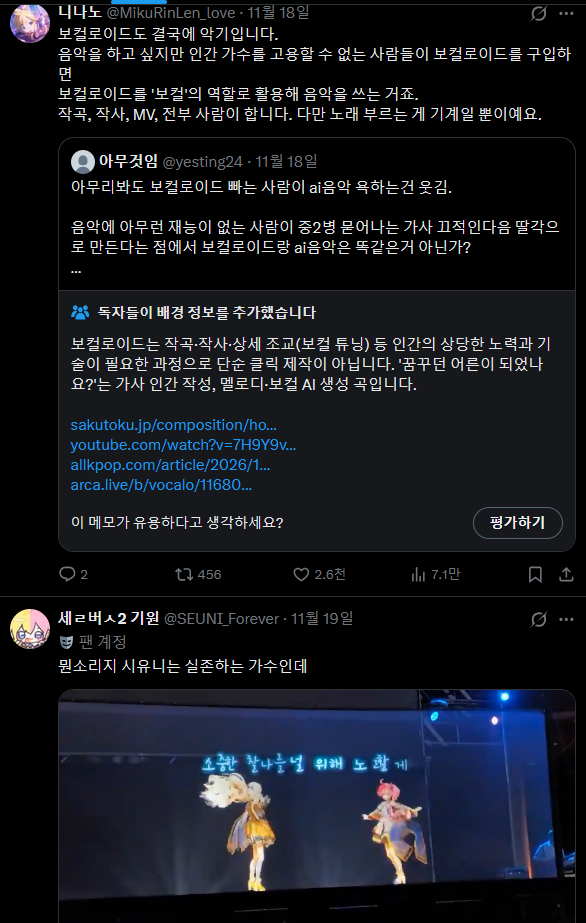
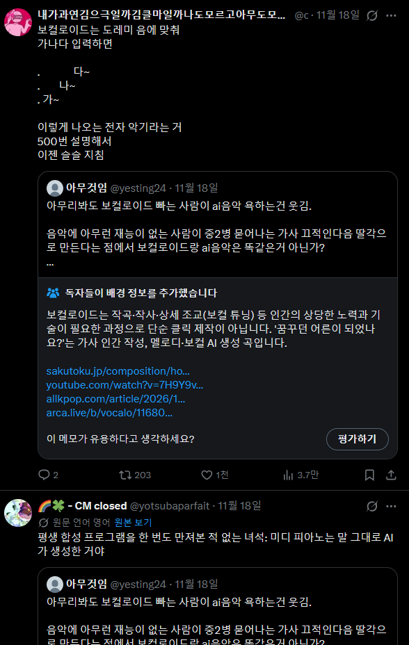

???: 보컬로이드 그거 AI 딸깍으로 노래 만드는거잖아
크악 씨이빨




???: 보컬로이드 그거 AI 딸깍으로 노래 만드는거잖아
크악 씨이빨
ai노래 만드는사람한텐
ai가 악기지 뭐
악기가 저절로 움직여서 소리를 내면 그건 오르골 감상하는 거지 연주는 아닙니다. 제발 좀...
연주는 지금 노래들도 아니지 직접 연주 녹음하는거면 모를까
ai노래의 기준은 어디임?
작사?작곡? 멜로디?
작사만 넣고 ai돌리면 ai노래임?
작사 작곡 넣고 노래만 ai돌리면?
어디까지 ai노래고 음악임?
쟤 ai욕먹일려고 일부러 저러는중 ㅋㅋ
보카로 조교 한번만 해보면 딸깍 소리 못 함
이건 UFC네요
밀키트는 요리인가?
컵라면도 요리잖아?
보컬로이드는 악기같은 거 아닌가
피아니스트에겐 피아노가 악기고
첼리스트에게 첼로가 악기고
지휘자에게 오케스트라가 악기이듯